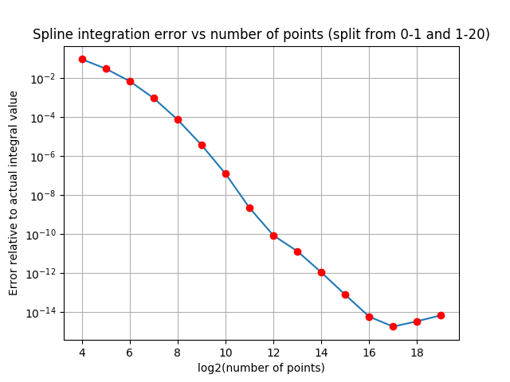

EE5011: Computer Methods in Electrical Engineering
Romberg Integration (Week 4)
Rohan Rao, EE14B118
1 Programming Assignment
I = (2)/(a2)a⌠⌡0J2v(κr)rdr + (2)/(a2)||(Jv(κa))/(Kv(γa))||2∞⌠⌡aK2v(γr)rdr
1.1 Transformation using the dimensionless variable u = (r)/(a)
u = (r)/(a) means r = a.u and dr = a.du, r=0 means u=0 and r=a means u=1
On substituting,
I = 21⌠⌡0J2v(ku)udu + (2)/(a2)||(Jv(k))/(Kv(g))||2∞⌠⌡1K2v(gu)udu
Where k=κa = 2.7 and g = γa = 1.2.
1.2 Plot the integrand in Python
The integrand is composed of two parts:
f(u) = 2*J2v(ku)*u
for 0 ≤ u < 1 and
f(u) = 2*||(J2v(k))/(K2v(g))||*K2v(gu)*u
for 1 ≤ u < ∞.
The plot of the function on a semi log scale (in u) is as follows:
On a semi log scale in y = f(u) on the range [0.001,10] is as follows:
The above plot shows that beyond x=2 (approx), the function behaves like an exponentially decaying function, and by the time x=10, the value has dropped by 10 orders of magnitude.
Code:
def func(u):
return 2*u*sp.jv(3,2.7*u)**2
def func2(u):
return 2*sp.kv(3,1.2*u)**2*u*abs(sp.jv(3,2.7)/sp.kv(3,1.2))**2
def integrand(u):
if u<1.0:
return func(u)
else:
return func2(u)
x=logspace(-3,7,200)
semilogx(x,integrand(x))
title("Dielectric Fibre Electromagnetic Mode integrand function")
xlabel("Value of x ->")
ylabel("Value of function f(x) ->")
show()
The function reaches a maximum value of nearly 0.13 at the point x=1. This is not visible even in the plot above, since the logspace() function defined above does not include the sample x=1. This shows that even finer sampling will be required in that region. The function is continuous, as can be verified from checking the value from the above func() and func2() at x=1. The function is not smooth at x=1 since it has a very sharp variation in the second derivative, forming a discontinuity. This will require a very small value of h when using trapzd integration.
1.3 Analytically evaluating the integral
∞⌠⌡af(u)du
The function func2() is the value of the integrand beyond u=1. Writing it in the convenient form f(u) = C*Kv(1.2u)*u, where C = 2*||(J2v(k))/(K2v(k))||, v = 3, k = 2.7, g = 1.2:
For x⋙v, Kv(x) can be approximated asymptotically by the function (π)/(√(2πx))e − x. Thus:
∞⌠⌡af(u)du = ∞⌠⌡a⎛⎝C*u*(π)/(√(2π1.2u))exp( − 1.2u)⎞⎠
This simplifies to:
∞⌠⌡aC2√(u)exp( − 1.2u)du
where C2 = C√((π)/(2.4)). For large values of u, we can upper-bound the above integral by taking √(u) < √(100) < 10. Thus, from the above functions, since we can ascertain that the function value will drop to below 10 − 107 by u=100, we can bound the integral by using the above approximation. The final form of the expression is as follows:
∞⌠⌡af(u)du < ∞⌠⌡a10.C2exp( − 1.2u)du = (10C2)/(1.2)exp( − 1.2a)
Substituting for C=0.00844 and C2 = C√((π)/(2.4)) we get the value of the above expression as 0.08046*exp(-1.2a). We can evaluate this for various values of “a” so as to obtain the point beyond which the above integration is below the required tolerance of the problem. For the purpose of the following set of questions, evaluating the function at a=15 and a=20 gives values of the order of 10 − 9 and 10 − 12 respectively. So, a=20 is sufficient for a required tolerance of 10 − 10.
1.4 Using scipy.integrate.quad to do the integration
First of all, the exact value of the integral (derived analytically, provided beforehand) is as follows:
def exact(): return sp.jv(3,2.7)**2-sp.jv(4,2.7)*sp.jv(2,2.7)+abs(sp.jv(3,2.7)/sp.kv(3,1.2))**2*(sp.kv(4,1.2)*sp.kv(2,1.2)-sp.kv(3,1.2)**2)
If we use scipy.integrate on the integrand function f(u) by considering x=20 as the upper limit of the integral described above, we get:
def func(u):
return 2*u*sp.jv(3,2.7*u)**2
def func2(u):
return 2*sp.kv(3,1.2*u)**2*u*abs(sp.jv(3,2.7)/sp.kv(3,1.2))**2
def integrand(u):
if u<1.0:
return func(u)
else:
return func2(u)
In: integrate.quad(integrand,0,20)
Out: (0.04603886028000008, 6.923921130885802e-09)
Upon turning on full_output=1, number of function evaluations required shows as neval=567 for the upper limit of x=20. The error between the obtained value and the exact analytic expression can be obtained by subtracting exact().
In: integrate.quad(integrand,0,20,full_output=0)[0]-exact() Out:1.3555823130673161e-13
This shows that the upper limit of a=20 is sufficient for obtaining an accurate answer.
1.5 Using trapzd from the Romberg module
Using a global variable count and then calculating the number of function calls in a trapzd loop, we get the following outputs:
for i in range(1,20):
s=r.trapzd(integrand,0,20,s,i)
print "%1d %.15f %.2e"%(i,s,s-I0)
print count
count=0
Out:
2,
1,
2,
4,
8,
16,
32,
64,
128,
256,
512,
1024,
2048,
4096,
8192,
16384,
32768,
65536,
131072
Out2:
1 0.000000000000000 -4.60e-02
2 0.000000000008383 -4.60e-02
3 0.000001289283323 -4.60e-02
4 0.000787977244362 -4.53e-02
5 0.044751328048882 -1.29e-03
6 0.029521687183219 -1.65e-02
7 0.046897366417297 8.59e-04
8 0.044868891255571 -1.17e-03
9 0.046056219282115 1.74e-05
10 0.045961594571426 -7.73e-05
11 0.046040763026165 1.90e-06
12 0.046034076754719 -4.78e-06
13 0.046038966706764 1.06e-07
14 0.046038560504368 -3.00e-07
15 0.046038867128737 6.85e-09
16 0.046038841556128 -1.87e-08
17 0.046038860704844 4.25e-10
18 0.046038859109436 -1.17e-09
19 0.046038860306469 2.66e-11
The plot obtained (log-log plot due to large order variations):
The overall trend shows that the function value is going down with increasing number of function calls. However, trapzd clearly requires 4-5 orders of magnitude more function calls than scipy.integrate.quad to obtain the same accuracy of nearly 10 − 10, and with 512 function calls, its error is nearly 2*10 − 6. It makes a difference whether r=1 is included in the function evaluation, since the function value around that point drops off extremely quickly and hence the integral value will differ based on it.
1.6 Using qromb from the Romberg module
The use of qromb over the interval (0, a=20) with a required tolerance of 10 − 10 gives the number of function calls as N=524289, 3 orders of magnitude greater than scipy.quad.integrate.
In: r.qromb(integrand,0,20,1e-10) Out: (0.046038860123720424, -3.0025314137784918e-12, 524289)
The output of the following code will show how the error scales with the number of function calls:
In: for i in range(-1,-11,-1):
print r.qromb(integrand,0,20,10**i)
Out:
(0.06453069939527602, 0.00024762829418648665, 17)
(0.06453069939527602, 0.00024762829418648665, 17)
(0.04666239432307808, 1.2538441623417591e-05, 257)
(0.04588102573376104, -3.003242764428245e-06, 513)
(0.04602855383209874, -1.9770401457648317e-07, 2049)
(0.04603822202670924, -1.2278888980499384e-08, 8193)
(0.04603902020149272, 3.069905837882252e-09, 16385)
(0.04603887027120843, 1.9222654805821073e-10, 65537)
(0.046038860904377095, 1.2008630269232545e-11, 262145)
(0.046038860123720424, -3.0025314137784918e-12, 524289)
This plot shows that the error drops by an order of magnitude (log-log plot) with an order of magnitude increase in number of function calls.
1.7 Split integral into (0,1) and (1,20) parts
On splitting the integral into (0,1) and (1,20) parts, a considerably smaller number of function calls are required to obtain the same accuracy, and even far beyond the required accuracy.
counts=[]
errors=[]
for i in range(-1,-11,-1):
x1=r.qromb(integrand,0,1,10**i)
x2=r.qromb(integrand,1,20,10**i)
print x1[0]+x2[0],x1[0]+x2[0]-exact(),x1[2]+x2[2]
counts.append(x1[2]+x2[2])
errors.append(abs(x1[0]+x2[0]-exact()))
loglog(counts, errors)
title("Error vs number of function calls (split 0-1 and 1-20)")
xlabel("Number of function calls")
ylabel("Error in integration")
The plot above has a much steeper slope as compared to the naive Romberg integration being applied on the full interval (0,20). This is a result of correctly using the information of the sharp peak at x=1 for splitting the integral to obtain a more precise numerical solution. The comparison on the same plot is given below:
1.8 Implementation of qromb using trapzd and polint
import romberg as r
global count=0
def func(u):
return 2*u*sp.jv(3,2.7*u)**2
def func2(u):
return 2*sp.kv(3,1.2*u)**2*u*abs(sp.jv(3,2.7)/sp.kv(3,1.2))**2
def integrand(u):
global count; count+=1;
if u<1.0:
return func(u)
else:
return func2(u)
order=5
s_out=0.0
xx=[]; yy=[] //polynomial is a function of h^2 and not h
for i in range(1,order+1):
s_out=r.trapzd(integrand,0,20,s_out,i)
xx.append((20.0/(2**(i-1)))**2)
yy.append(s_out)
y,err=r.polint(xx,yy,0) //extrapolation to h=0
1.9 Varying order of qromb vs number of function calls

As can be seen from the semilog plot above, the number of calls decreases from n=5 to n=11, then increases beyond that, for a fixed tolerance of 10 − 8.
1.10 Spline Integration using B-Spline from scipy
This plot shows that the error drops by an order of magnitude (log-log plot) with an order of magnitude increase in number of function calls. Spline interpolation of the function forces it to consider the kink at x=1 as an n-th order smooth polynomial, thus reducing the accuracy of the fit. As more points are included, the value around x=1 is sampled even more closely, thus improving the accuracy, but not actually addressing the problem, that is the kink at x=1.
In : for i in range(4,20): .....: x=linspace(0,20,2**i) .....: y=integrand(x) .....: tck=si.splrep(x,y) .....: I=si.splint(0,20,tck) .....: print I-exact() .....: err.append(abs(I-exact())) .....: Out: -0.00469338304051 -0.0200338967057 0.00456726068437 -0.000966336076695 -9.77496443497e-05 -8.51200801124e-05 1.04082882958e-05 -3.96607022308e-06 -3.43103425497e-07 -3.30422590164e-07 4.00474137047e-08 -1.55316829675e-08 -1.33063099428e-09 -1.29013279226e-09 1.56270989204e-10 -6.07057945579e-11
1.11 Split into two parts (0,1) and (1,20) and then use splint
for i in range(4,20):
x1=linspace(0,1,2**(i-1))
y1=integrand(x1)
tck1=si.splrep(x1,y1)
I1=si.splint(0,1,tck1)
x2=linspace(1,20,2**(i-1))
y2=integrand(x2)
tck2=si.splrep(x2,y2)
I2=si.splint(1,20,tck2)
print I1+I2-exact()
err.append(abs(I1+I2-exact()))
The above code snippet splits the function into two parts, one before 1 and one after 1. The number of points for a given evaluation remains the same as before (half the points are used before 1, and half are used after 1: this could have been made as 1/20 before 1 and 19/20 after 1 as well).

The above graph decays much faster than the previously obtained graph. This can be seen from the image below.
The green line is obtained when the function is split over the two intervals, whereas the blue one is obtained when considering a single interval (0,20). This shows that spline fitting/integration gives a better result when discontinuities or irregularities/kinks of the function are excluded/split. This allows us to separately fit the individual halves of the function and thus obtain a better fit.
1.12 Custom 3-point trapzd function for Romberg
def trap3(func, a, b, n):
if(n==1):
return 0.5*(b-a)*(func(a)+func(b))
else:
d = (float)(b-a)/3**(n-1)
sum=0.0
x=a+d
while(x<b):
sum+=func(x)*d; x+=d;
sum+=0.5*d*(func(a)+func(b))
return sum
The above function trap3 as defined in Python implements a trapezoidal integration algorithm by splitting by 3 each time, meaning that for n=1 the points considered are x=a and x=b, but for n=2, the two points between a,b that are equidistant from the ends are considered. The interval is divided into three. Similarly, for n=3, the interval is divided into 9 equal parts. And so on. The above function is not optimized, and also does not use any logic for utilizing previously used points. As a result, it will require approximately twice the number of function evaluations for the same accuracy.
Implementing Romberg using the above function simply requires the use of polint on a set of values obtained from above.
xx=[]; yy=[] order=12 for i in range(1,order+1): xx.append((20.0/3**(i-1)**2) yy.append(trap3(integrand,0,20,i)) y,err=r.polint(xx,yy,0)
Use of the above code snippet gives an error y-exact() as 3.4766x10 − 10, and requires N=265741 calls to the function “integrand”. From section 1.6, it is seen that the qromb function in the romberg module requires 524289 function calls for a similar order tolerance. This is about 2 times more than that required for the 3-point Romberg as programmed above, which does not even consider logic for utilizing previously used points.